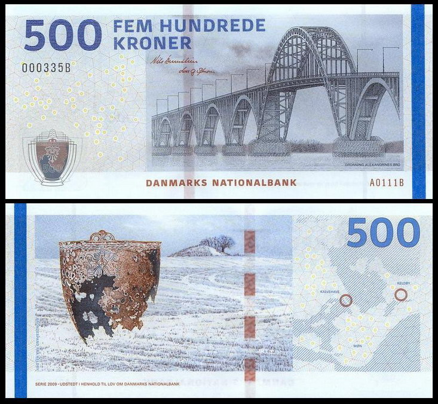
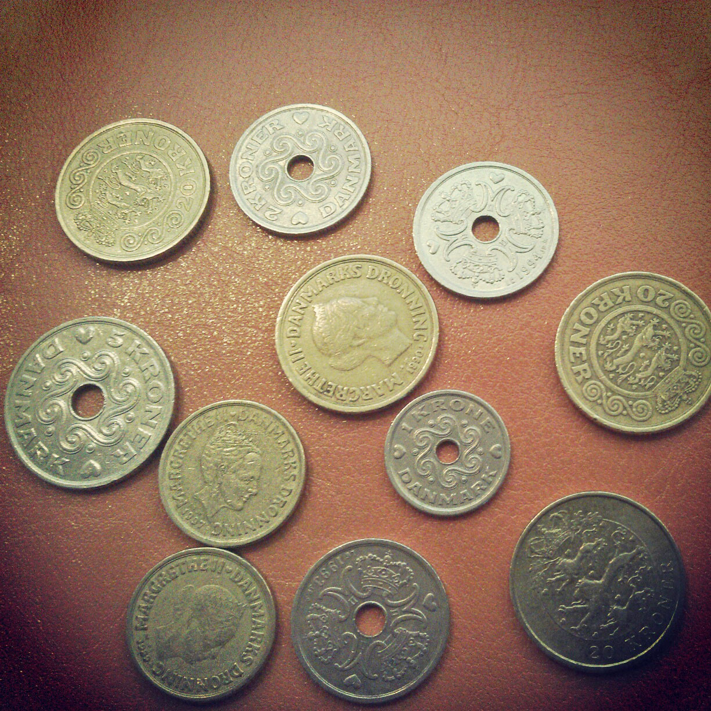
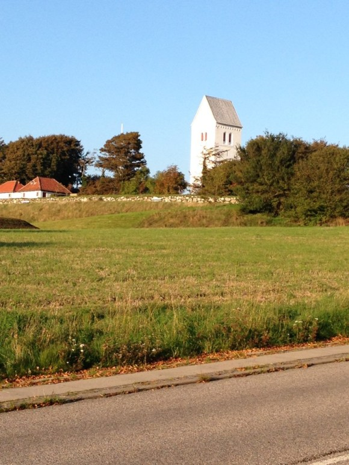
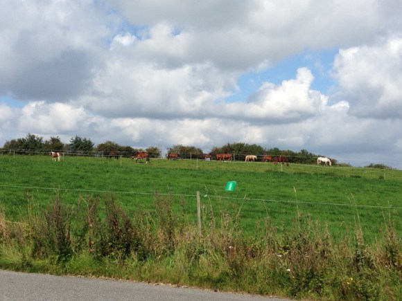
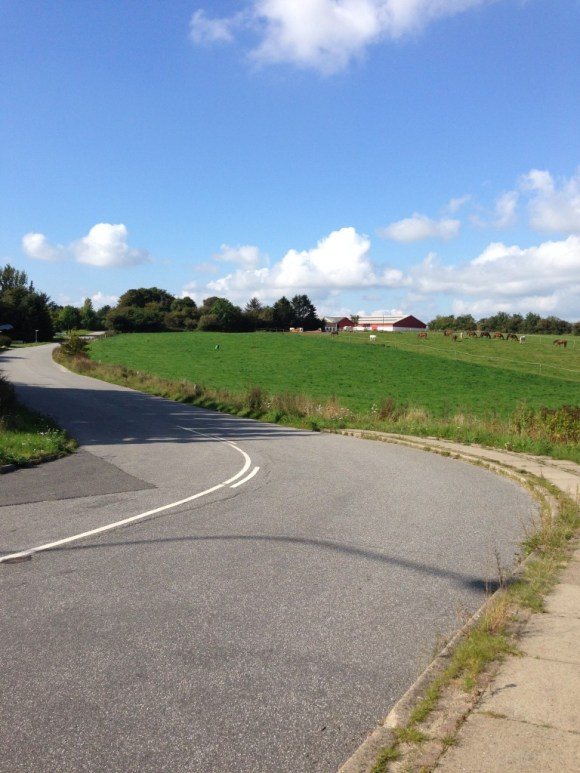

2,622 words in total, 9 minutes required. 场景转入丹麦，演角没有片刻休憩，这里就开始上演你的衣食住行、柴米油盐，它以最原始地状态审问着你，生活的点滴给你染上了怎样的色彩？是天空的蓝，还是土地的黑？ 6. 通行货币我承认这个子标题我思量了很久，之所以没有用【钱】这个词不是为了免俗，而只是想说——它绝对不仅仅是用来“花”的，在这儿，你开始生平第一次去估计它的等量价值，去计算它的汇率，去欣赏着印刷的设计图案（我思来想去原来是因为这种货币没有通篇一律的印刷某一种极其常见的东西，比如某元首头像）。去丹麦之前，我寻到中行浙江总行才换到丹麦克朗，考虑到使用双币信用卡，我只兑了1500DKK，DKK即是丹麦克朗的代号(之所以是DKK是因为丹麦语克朗叫做k-r-one-r)，就如同Chinese Yuan代号CNY一样。克朗krone在北欧相当于yuan了~如今丹麦有丹麦克朗，瑞典有瑞典克朗，挪威有挪威克朗，和人民币汇率几乎对等，但是也有高有低，譬如瑞典克朗就不如人民币值钱，1瑞典克朗只等同于人民币8毛左右，而目前丹麦克朗与人民币的汇率约为1：1.07，1500DKK拿到手，加上少量手续费一共花了1600CNY。在此，温馨提示：中行换外币据称是最良心的，因为其他银行都是过手的二道贩子，Bank of China这名字大致如此了。 丹麦纸币，500克朗 实际上，1500DKK拿到手，就是薄薄的3张500大钞，而且丹麦人还丧心病狂的印了1000DKK，爱丢钱的人由此露出了鄙视的眼光→_→，这三张蓝色大桥图案和我漂洋过海，其中一张飞入了奔驰座驾的圣诞爷爷手中，从他找给我的零钱那儿，我见到了丹麦的硬币是什么样子的，好！接下来本人用下图来给大家提高一下知识水平，以后吹吹牛啥的也方便。 首先，颜色两种，不过和咱是反的，你别看人家长得像人民币的五毛！人家都是至少10kr的高级币，也是有币格的！小的10kr大的20kr，中间有眼的，被洋圈圈同学指认为铜钱的这种，就是下等货币了~别看脸大，脸大的那个才5kr，剩下两种分别为2kr和1kr。 丹麦货币中还有200和100的纸币，ore是丹麦的单位“分”，100 ore = 1kr， 硬币中也有50 ore这一种类。 丹麦克朗中的硬币 7. 跟身份证号一般重要的住宅地址鉴赏完有币格的丹麦货币，从出租上搬下行李，当地时间11点我出现在了住所的门前。房东先生是奥尔堡大学某位华人教授，国内时我已经分别和房东及室友师兄聊了很多，所以当天我就住进了租房，而憨厚的LIU师兄也坚持在深夜等待我的来到~ 一切都是很顺利的。 这个4人分享的flat暂时只有LIU师兄一人居住，厨房可以使用，浴室需要共用，我选择了一件小屋子，它会带给我寒冬里的温暖，家具不多，考虑到不到半年的生活，这些因素都不在话下。9月初，屋里已经可以进行供暖，室外只有12°C，我顺利从短袖短裤过度到暖气包围的生活中。 说起住所地址，在丹麦人眼中十分重要，它出现在你的个人身份卡上，它是除了姓名外辨识身份最有效的信息，它出现在各种申请表格的最重要位置。除此外，在丹麦，所有的资料文档丹麦人都有条不紊通过邮寄到个人地址的方式进行传递。快递来了，人不在住所，快递小哥也不给你打电话，邮箱上一张告示一贴，走你！‘“亲爱的某先生，今儿咱给您快递拿过来了，那啥你不在这地址呀，我们地址是XXX，抽空过来自取一下~”。因此，一旦你的地址发生改变，你应该放下所有事情通知市政厅进行更正，脑补下这在我人口众多的泱泱大国，简直天方夜谭呀。 8. 惊人的生态 怡人的气候一觉醒来，窗外的阳关如此令人舒心，我倏地起身，收拾妥当，今天我要和LIU师兄步行前往校园，顺便感受下白日的这座北欧城市。一出大门，对面就是一片马场，昨天夜里觉得此处荒凉，原野一般，原来如此！这一条蜿蜒的小公路的另一旁，就是包括我住所在内的一排排小民居，这些真正的HOUSE形态各异，别具特色。后来我问到，在奥尔堡，一幢二手买到的二层房产，约百万克朗，这价格，在杭州城市边缘买一个apartment也许还不太够，真是（此处省略我的思考~~~） 天空的色彩传递了一个非常明显的信号——空气质量cool！大快朵颐地吸收天地间的气息，有种石头里蹦出孙悟空的冲动！一路上，马场上吃草的马儿，高空进行鸟粪轰炸的鸟儿，小路中央围着自己尾巴打转的小老鼠！我翻了一下google地图以确定不是住在野生动物园里头。 总之，天空的透亮，空气的舒爽，令人瞬时精神倍儿棒~ 生态环境优越，植物覆盖率极高，动物不怕人？据说都是被丹麦法律惯坏的，动物权益高，过街老鼠这个词应该在丹麦词典中翻不到吧。 白色教堂静静享受的马儿天空云朵和马路 9. 没有校门的大学“野生动物园”里走一遭，如果有一群鸟从你头上盘旋过去，那么注意了，肩膀和脑袋上该检查没有没落下一个完美的十环。从住处走来半个小时，沐浴在斜射的阳光中，没有人指引，我是万万不知道自己身在何处了。一路上你会发现，这个城市果然将自行车更多视为一种爱好，他们开心地在清晨滚动自己的车轮，也在这片家园印下轻盈的痕迹。 穿过一个爬满青藤的小涵洞，LIU师兄指着一幢4层的“巨型建筑”告诉我，这就是学校的图书馆，我们已经进入了学校的地界，我很轻易的接受了这么一个事实，因为我想，一个遍地都如此原生态的地域，你忍心大肆施工安上一个不伦不类的现代化校门么？毕竟没有门面工作的业绩考核呀~ 那么如果非要大肆施工安个校门，免不了使用挖掘机，这样的话问题就来了：学挖掘机技术到底哪家强？ 10. 丹麦的电信来前给自己列出的计划中，购买一张当地手机卡无疑是排在最前面的，昨夜和LIU师兄规划的第一个方案就是找一家大超市，买一张Pre-paid（预付费电话卡）。丹麦的电话卡不需要跑到移动营业厅去，大部分超市中都以商品的形式出售，不过还是要出示一下护照以表身份，号码就印在盒子上，我毫不犹豫选了个尾号6的，看来我的传统特性依旧保持得很好~ 电话卡花了45kr，其中有15kr话费，随后又买了100kr充值卡，电话卡里1145kr余额够应付了。当然这部分是不包含数据流量包的，而99kr可以买到1GB的套餐（事实上由于套餐修改我得到了2GB），丹麦的预付费卡是按照30天计时，也就是说30天后你的某项付费业务没有取消，将从你的余额中扣去相应费用并延续一个月，并不如同国内统一在每月1日进行结算，虽然维护起来复杂些，但着实合理。 Fotex是丹麦较具规模的连锁超市，这位Fotex的帅哥员工帮我设置好手机（因为一堆晦涩的丹麦语）。我购买的是Lebara电话卡，看中它国际长途的优势，好！现在华丽丽的3G图标出现了，运营商是Tenelor（Lebara是虚拟运营商，简单而言就是依托别人网络的二道贩子）。 丹麦的电话卡有几点不得不说：首先，不同运营商之间的通讯贵的离谱，一分钟几克朗甚至比达到肯尼亚还要贵！其次，运营商内部优惠厉害，可能不收费，随便打！再次，接通电话要钱，不接通电话也要收钱，洋圈圈告诉我应该不会出现给男朋友连打50个电话的惨剧；最后，语音留言服务也很贵，谨慎使用。 Lebara电话卡的优势正如我说，来自国际长途的优惠，拨打中国的电话接通需要1kr，随后每分钟0.01kr，这真是不打半小时不舒服斯基呀……但是我来后一周，Lebara就宣布上调了拨打中国的花费，涨到0.1kr，足足10倍！我打客户电话过去咨询，他们才发现上调后没有及时在网站上更新，并连声向我感谢，当然，这么做是没有丝毫好处滴。 兴许是丹麦人过于休闲的生活方式以及传统邮寄在生活中占据的重要地位，走在大街上，你几乎看不到丹麦人在把玩手机或者接听电话（校园里等公交时年轻人可以逃出来看一番）。当然也跟他们遵循交通规则有些许关系。丹麦电信业的发展可见一斑。 【连载继续】 ← Previous Post Next Post→ To show LiveRe comment, please use JavaScript Table of Contents 6. 通行货币7. 跟身份证号一般重要的住宅地址8. 惊人的生态 怡人的气候9. 没有校门的大学10. 丹麦的电信